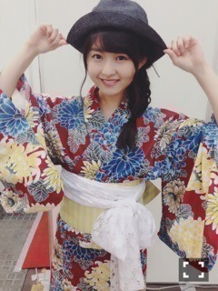
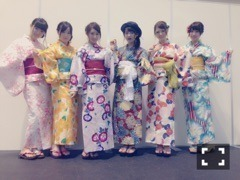

| 2015/07 30 Thu | ハイカランプ。656回目 |
京都2日間
ありがとうございました！
まりこ祭りでした笑
気に入っていただけてよかったです。
セブンイレブン限定ライブ
全握ミニライブ
久しぶりのライブ楽しかったよ♪
良いセットリストでした〜
2日目は個別で浴衣着たよー

去年は黒で今年は大正浪漫。
派手にしたつもりだったんだけど、、
意外と色味が渋かったみたい。
大柄な花は定番だけど
落ち着いてます。
レースの帯、カーテン巻いたのか
とたくさん言われたが！
ヴィンテージ感あってお気に入り。
お祭りじゃなくて
普段着としての浴衣！
帽子も馴染みました、たぶん
さりげなく厚底です
ボストンバッグを持って歩きたい、
全握でペアだったみり愛o(^▽^)o
浴衣のセレクトよいね！
市松模様かわいいよね、似合う！

全身の図
並んだら華やかになったo(^▽^)o
昨日は、FNSうたの夏まつり
出演しました！
毎度、豪華なアーティストの方々に
囲まれて緊張します。
出演できて嬉しいです。

発売中の未央奈表紙の美術手帖が！！
NORIKONAKAZATO、bodysong.
mame、hatra、SINA SUIEN、、
好きなものばっかりだった。。
SINA SUIENの「木木/SUIEN」
可愛くてキュンキュンする！
着たい、ずっと眺めていたい
今週の名古屋の握手会と
セブンイレブンライブ、
よろしくお願いしますo(^▽^)o
まりか
コメント(512)
2015/07/30 22:24